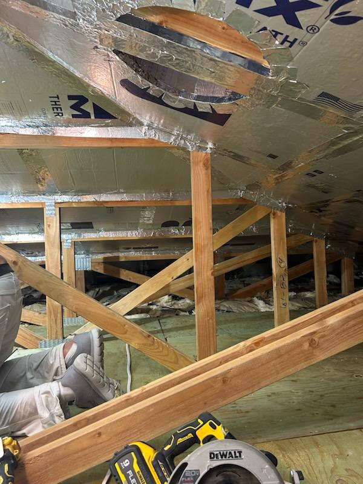
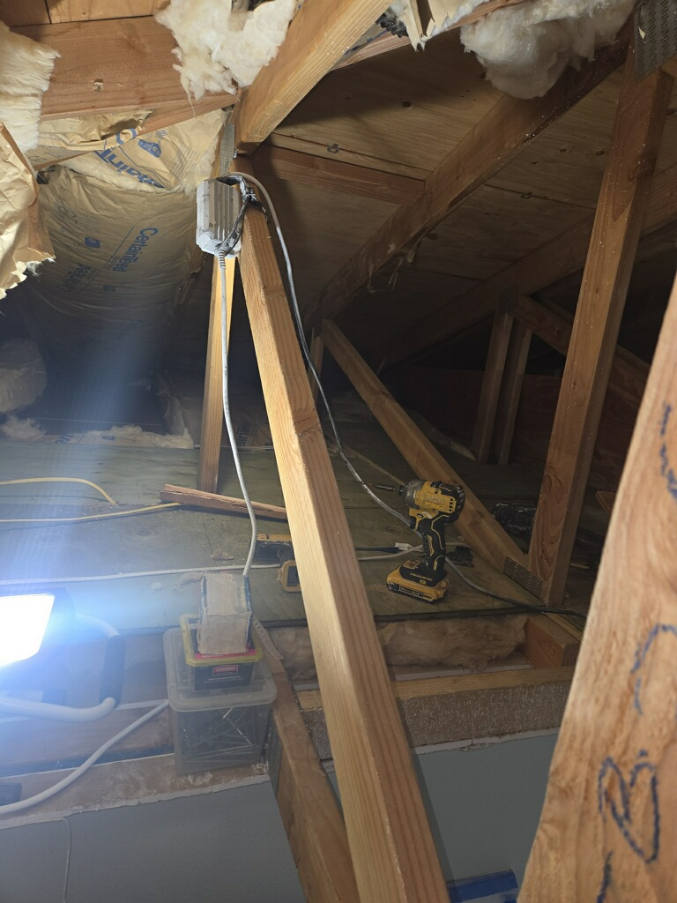

Cracks, stains, sagging areas and access cuts repaired and ready for paint.
Ceiling problems are highly visible. We focus on clean repairs, safe work practices and texture that matches the rest of the room.



Many ceiling problems start small and get worse over time. Addressing them early can prevent larger repairs later.
Cracks at joints, along walls and around beams repaired and refinished so they do not keep reappearing.
Areas that feel soft or look uneven are checked for framing or water issues and rebuilt as needed.
After the leak is fixed and the area is dry, we cut out damaged material, replace it and match the texture.
Openings for plumbing, electrical or HVAC work patched and finished so the ceiling looks complete again.
Working overhead is different from working on walls. We protect floors and fixtures and keep dust under control.
Floors and furniture are covered, and we set up safe access to the repair area before we start cutting or sanding.
Repairs are tied into framing or added backing so new material is stable and does not sag.
We match existing ceiling texture as closely as possible and prepare the surface for primer and paint.
Common questions homeowners on Oahu ask before scheduling ceiling drywall repair.
If your ceiling has sagging areas, soft spots or cracks that keep returning after repairs, replacement is usually the more reliable option. Water staining also needs the source fixed and the area fully dried before we can assess whether patching is enough or full replacement is needed.
Yes. We match existing ceiling texture as closely as possible, whether the finish is smooth, knockdown or orange peel. The goal is for the repair to be invisible once the area is painted.
Yes. We protect floors and furniture before we start and keep dust controlled throughout the job. Most ceiling repairs can be completed with minimal disruption to your daily routine.
Let us know what you are seeing on the ceiling and how long it has been there. Photos are helpful if you can send them.